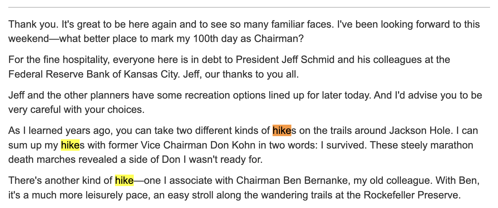
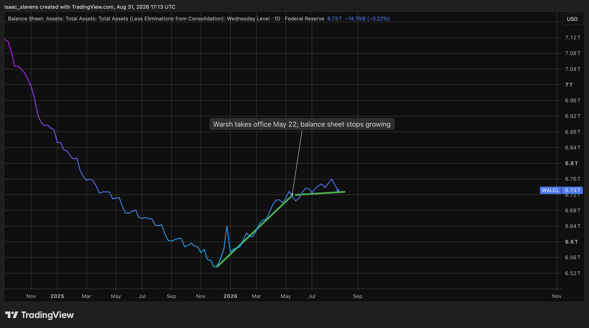
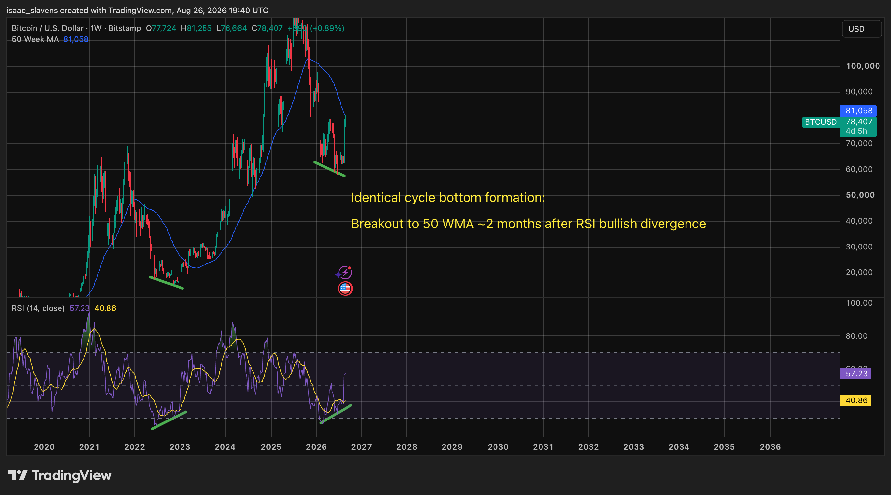
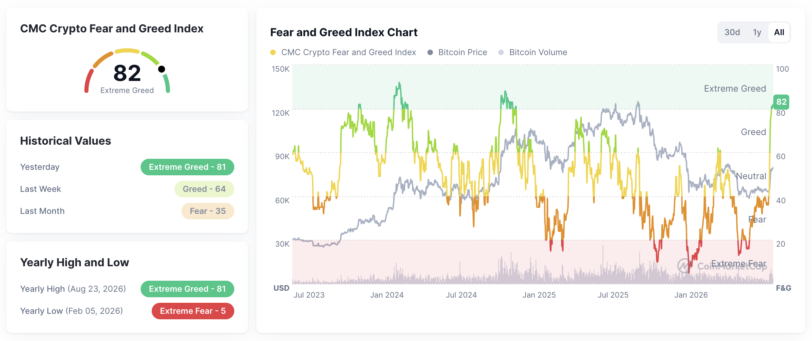
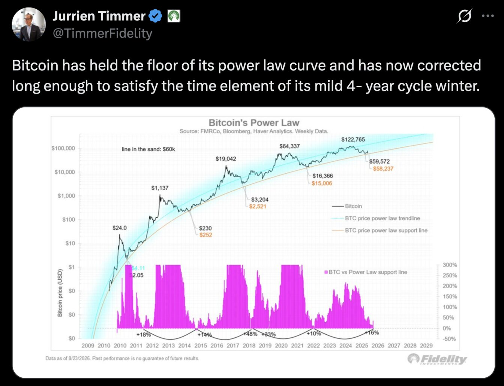
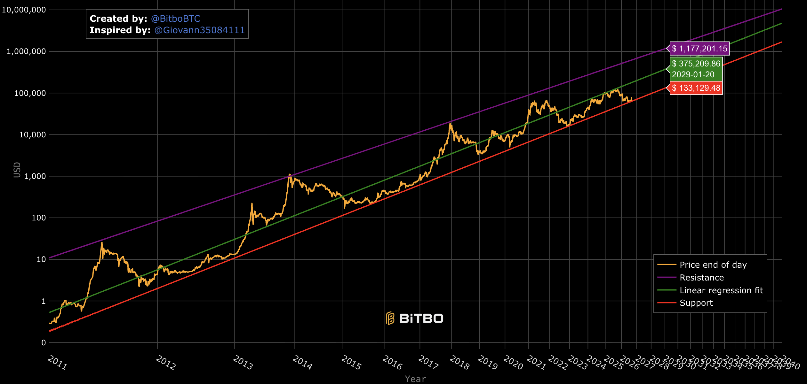
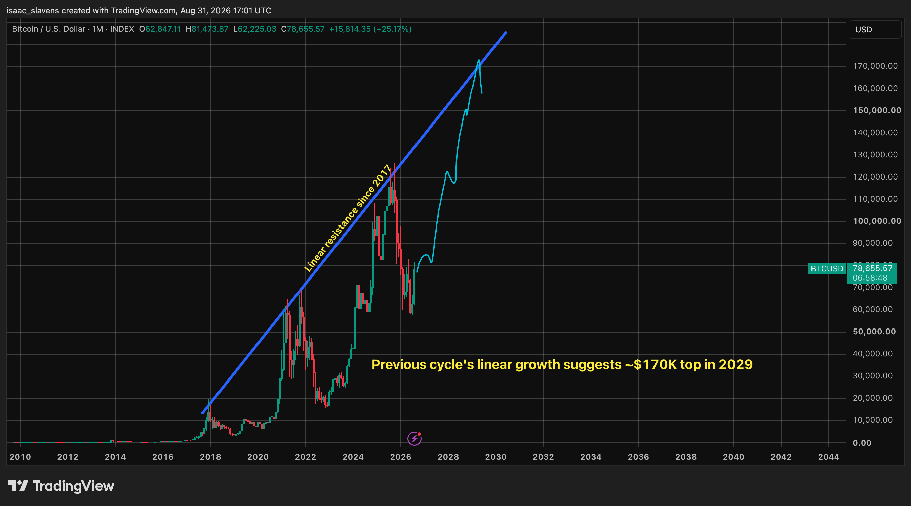
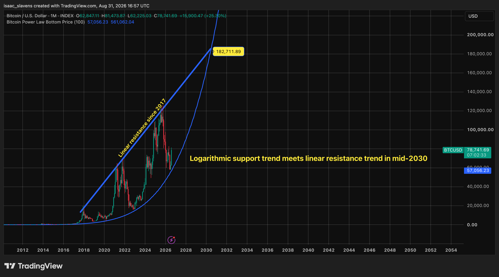

Jackson Hole
After 100 days in office, Chairman Warsh delivered his inaugural Jackson Hole speech1. Despite delivering a 30-minute address, longer than any of Jerome Powell's addresses, Warsh still managed to hold back on giving the market all the juicy info it wanted. Warsh likes to reveal as little information as possible on how he sees Federal Reserve policy developing, and reveal as much as possible about his governance and guidance philosophy. His remarks began with the word "hike" tossed into the mix three times before he could even clear his throat1, a tease that was doubtlessly intentional, or so I'd like to believe.

Warsh basically confessed to the fact that ongoing policy decisions may not be in the best interest of the dual mandate as a result of bond market interference, when insisting on the need for "clear market signals, as unfiltered as possible . . . from market internals . . . the level and change in asset prices across sectors . . . the prices and trading volumes of Treasury securities."1 In other words, this was a polite request to Treasury Secretary Scott Bessent to leave the quantitative easing to the Fed, since the quasi-QE and yield-curve control coming from the treasury means there are too many cooks in the kitchen for the bond market to do its job properly. He also added later on, in line with his pre-Chairman rhetoric, that he does not support the use of quantitative easing unless a crisis demands it: "short-term interest rates are the predominant tool to achieve the dual mandate. Unconventional policies to spur economic activity may suit genuine crises but should otherwise be used sparingly, if at all."1 Actions speak louder than words, and for now, the Fed's balance sheet has noticeably flattened in its growth since Warsh took office.

The only policy that Warsh has altered in his first 100 days was that of forward guidance, on which he clarified that "we should not indulge a regime in which market participants are looking primarily to the Fed for their next trade."1 It is also convenient for him that removing forward guidance gave room for yields to continue climbing throughout the summer as they priced in uncertainty about the future policy stance, which may justify tightening in September, which is currently trading at a 60% chance on Polymarket.
The Bitcoin bear market is over
It has been 324 days since Bitcoin had its apathetic cycle top on October 6th, 20252 -- a day which left those passionate about this asset class feeling giddy about the next major leg up, expecting a euphoric fourth quarter. Since then, the price fell over 50% to just under 58K in June2. Those who still see Bitcoin as an emerging niche asset were just as shocked in October to see the bull market end before 2021-like euphoria as they were to see the next bull market begin before the previously predictable state of despair in which the majority of coins are held at a loss. As it turns out, institutions and corporations are much less emotional traders than the average retail investor that was attracted to the crypto world for the 2017 or 2021 bull markets. The 2026 bear market began without any euphoric top leading into it, and ended two months before the asset's previous cycles or on-chain indicators suggested it ought to, hopefully acting as a wakeup call to those in the space who still expect it to behave as it did before becoming a multi-trillion dollar asset class. To those of us who have been viewing Bitcoin as the maturing and institutional asset that it is, the bottom at ~60k was clear.

It is because of the bullish divergence demonstrated in the chart above, in which price makes a lower-low as momentum makes a higher-low, that I became sufficiently confident that the bottom was in. This was exactly what marked the bottom in 2022, and while many were calling for another 25% decline, I found it was the more sober-minded analysts in the Bitcoin world taking this indicator seriously. As price continued chopping sideways for the two months following the divergence, just as it did in 2022, my conviction grew stronger. As I write this, price action continues to mimic that of the 2022 bottom, so the base case is that the 50-week moving average, displayed in blue above, ought to be flipped from resistance to support sometime in autumn. Mean reversion throughout September is part of that base case, as this explosive weekly gain sent the CMC Fear and Greed Index to a reading above 80, meaning extreme greed5. Every time this happens, Bitcoin tends to require at least a month for sentiment to cool off before a new high can form. It may be noted that the Fear and Greed Index closely matches the action in the weekly RSI indicator.

Now that the current bear market is over, the natural follow-up is speculation as to how high the next bull market can go. Instead of offering my own opinions, I will restrict this analysis to what experts and technicals indicate. It is largely irrelevant how high the cycle can go, given that it is the most lucrative and asymmetric buying opportunity available in markets at this time. I will present the base case and bullish case, based on which indicators support them.
The bullish case in this bull run is supported by the power-law model, a mathematical formula that the price has followed since the coin's genesis4. It has been vindicated throughout the entire history of Bitcoin, and often marked the exact tops and bottoms throughout its cycles. On August 28th the Director of Global Macro at Fidelity Jurrien Timmer posted the power-law chart and expressed his belief in its validity, as shown below3.

Throughout the bull market that ended on October 6th 2025, Bitcoin never made it past the power law's fair-value range, but only grazed it in December 2024 and the summer of 2025. Should Bitcoin return to its "fair-value" by January of 2029, the price would be over $375,000, and its market cap just shy of eight trillion4.

Bitcoin's adherence to this model since its genesis is undeniably compelling, but a stronger law than the power law is that of diminishing returns. Attracting seven trillion dollars in value over a three-year period is a big ask, although it is worth pointing out that gold managed to attract over fifteen trillion dollars to its global valuation, as it rose from under $2,000 per ounce to roughly $4,500 over the last three years2. I find the support band of this model to be the most compelling, as it seems much more realistic than the resistance bands, which likely fail to account for sufficiently diminishing returns. The power-law support has been extremely accurate at predicting the bottom of the bear markets through every single cycle4. In fact, this support level may have acted as a self-fulfilling prophecy, as many limit orders crypto whales attempt to enter at that level. The strongest argument in favour of power law resistance levels still being realistic is that many factors suppressed prices in the last cycle, such as tight monetary policy, AI investment sucking up risk appetite, and general retail euphoria concentrating on treasury companies.
The bullish case for the coming years is based on logarithmic trends, so naturally the base case is an appeal to linear trends. Bitcoin's last three cycle tops faced a linear resistance line that, extended to mid-2029, suggests a top at ~$170K2. A sober and modest forecast considers that since this bear market's bottom was ~$50,000 above the previous one2, the upcoming resistance will be at the equivalent range.

To finalize this section I will leave the reader with the following food for thought, which is something we will keep a keen eye on in this website's reports. When it comes to Bitcoin's diminishing returns, a decision will have to be made by 2030, as the chart below demonstrates.

If not sooner, it is by mid-2030 that either linear trends, logarithmic trends, or both of them, will be disproven by Bitcoin's price. Until then, it is not unreasonable to suggest that it will adhere to both trends, which remains my base case currently.